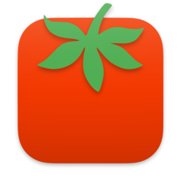

TomatoBar Personal让专注，慢慢生长
完全无声的 macOS 菜单栏番茄钟。每一段专注都留下名字与分类，日／周／月随时回顾时间去向。
macOS 12.3+Apple Silicon & Intel约 4 MBMIT 开源数据不离开本机

为什么是它
完全无声
移除了全部音频代码与素材。休息到点弹出的是无声置顶提醒窗，连系统通知权限都不需要。
有名字的记录
开始前写下「这次做什么」，结束后可改名、打多个标签、分统计类别——每段专注都可回溯、可删除。
暂停与继续
工作和休息都能暂停。电脑睡眠、退出应用自动暂停，中断恢复最多只差 5 秒检查点。
日 / 周 / 月复盘
色块流看一天的节奏，堆叠柱看一周的积累，热力日历看一个月的坚持。统计分类由你定义。
数据只在你手里
无网络请求、无遥测。记录原子写入本机 sessions.json，损坏保护 + 读盘恢复，界面可直接打开数据文件夹。
与原版共存
独立 Bundle ID 与数据目录，TomatoBar 原版可以同时装。基于上游改造，代码开源、版本可追溯。
三步开始
1 · 下载点上方按钮，选 dmg 或 zip（同一个 universal 版本，Intel / M 系列芯片通用）。
2 · 安装dmg 打开后把番茄拖进 Applications；zip 解压后移入 Applications。
3 · 首次打开本应用为 ad-hoc 签名（未做付费公证），若被 Gatekeeper 拦截，终端执行一次：
xattr -dr com.apple.quarantine "/Applications/TomatoBar Personal.app"